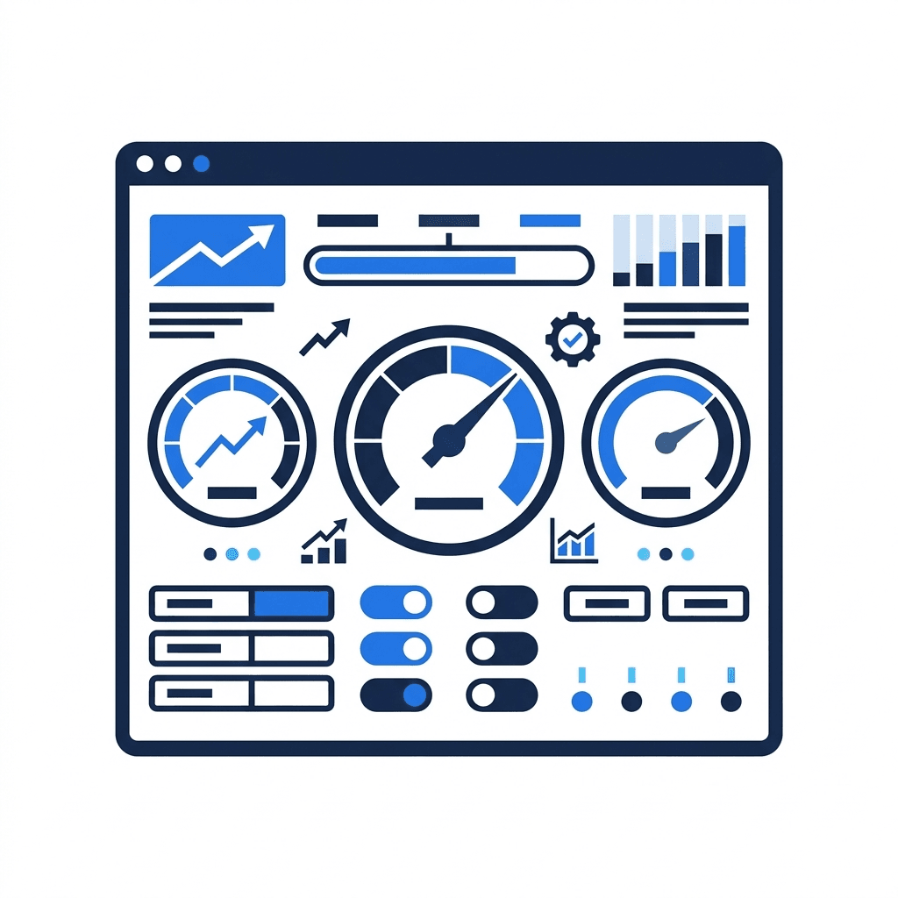
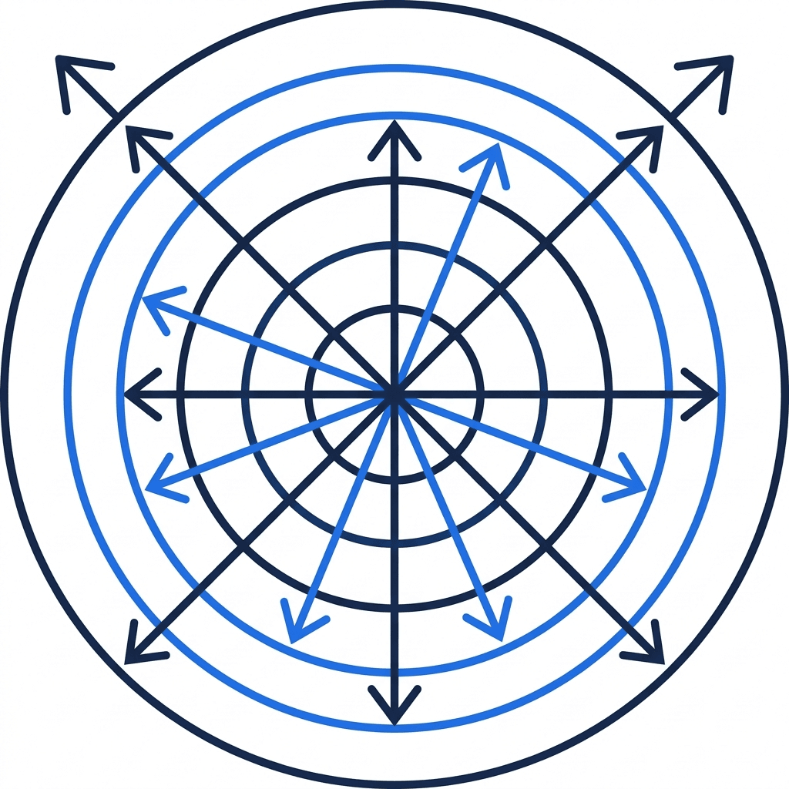
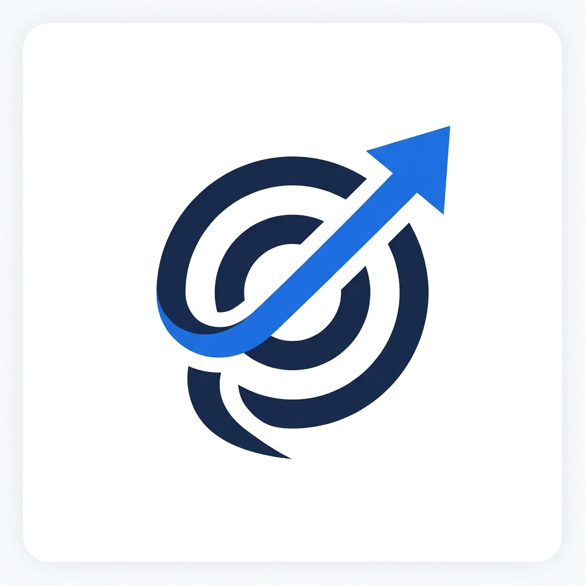

PubliX Group forener gründerledede SaaS-selskaper som digitaliserer offentlige tjenester i Nord-Europa. Vi er operatører – ikke finansielle ingeniører. Hver beslutning vi tar, starter med ett spørsmål: Hjelper dette selskapene våre med å bygge bedre produkter?
Offentlig sektor innebærer anskaffelsesregler, rammeavtaler, lange salgssykluser og regulerte kjøpere. Det krever tålmodighet, domenekompetanse og en dyp forståelse av hvordan offentlig sektor faktisk kjøper teknologi. PubliX konsentrerer seg om denne ene vertikalen – og har som mål å bli best i Norden. Når en gründer slutter seg til PubliX, får de et morselskap som virkelig forstår markedet deres.
Vi vokser gjennom delte kunder, ikke kostnadskutt. Selskapene våre selger til de samme og tilstøtende kunder – kommuner, fylker, stiftelser, offentlige etater. Kryssalg og samarbeid mellom porteføljeselskapene øker omsetningen organisk, i stedet for å kutte kostnader eller slå sammen team. Hvert selskap beholder sin identitet, sitt team og sin autonomi.
100 % fokus på SaaS for offentlig sektor i Norden
Kommuner, fylker & stiftelser som kjøper fra flere selskaper
Hvert selskap beholder sin administrerende direktør, sitt team & sin beslutningsmyndighet

Vi øker omsetningen gjennom kryssalg – ikke kostnadssynergier
Hvert selskap vi jobber med, drar nytte av to parallelle verdiskapingsspor – ett fokusert på å styrke fundamentet ditt, det andre på å akselerere vekst.

Styrke den operasjonelle kjernen slik at du kan skalere med selvtillit.

Utvid din markedsrekkevidde gjennom plattformens kraft.

"Gründere reinvesterer typisk deler av utbyttet sitt i gruppen, og tar del i verdien av hele plattformen i stedet for bare å selge og forlate selskapet."
— Dette er bevisst. Når gründere forblir investert, forblir insentivene samordnet.Vi snakker ikke bare om AI – vi integrerer det i alle selskaper i gruppen. Fra nye funksjoner i produktene til automatisering av interne operasjoner; AI er sentralt for hvordan PubliX skaper verdi.

Vi hjelper våre selskaper med å bygge AI-drevne funksjoner inn i produktene sine – fra intelligent automatisering til prediktiv analyse for arbeidsflyter i offentlig sektor.

Vi automatiserer leadgenerering, oppfølging av leads, kundestøtte, programvareutvikling samt økonomiske og administrative arbeidsflyter på tvers av gruppen – slik at våre selskaper kan fokusere på å bygge fantastiske produkter i stedet for administrasjon.

Vi lærer opp alle team på tvers av gruppen til å bruke AI-verktøy effektivt – og omdanner evner til resultater. Våre selskaper når målene sine raskere enn de trodde var mulig.

Enten du utforsker mulighetene dine, er nysgjerrig på hvor selskapet ditt står, eller bare ønsker å snakke med noen som forstår markedet ditt – ser vi frem til en samtale.